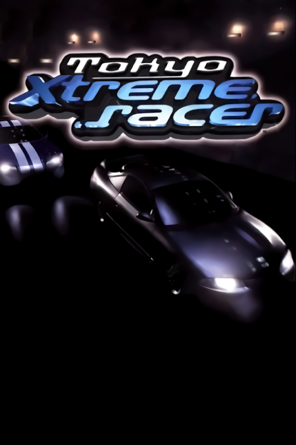

Tokyo Xtreme Racer
Every archived year-end list appearance, including placement and points earned.
About the Game
Tokyo Xtreme Racer, known as Shutokō Battle (首都高バトル) in Japan and Tokyo Highway Challenge in Europe, is a racing video game for the Sega Dreamcast. Released in 1999 as one of the console's launch titles, the game was one of the first mission-based racing games. The gameplay involves the player challenging other drivers on the Shuto Expressway in order to gain money to modify and enhance his or her car. The game features a wide variety of Japanese cars and tuning parts to purchase as the player progresses through rivals. When released in Japan, Shutokō Battle was one of the best selling Dreamcast titles at this time. The game is based on illegal highway racing in Tokyo's Wangan highway with custom tuned cars. A such phenomenon is growing popular in Japan since the 90's with its dedicated manga (Shutokō Battle's biggest inspiration being Wangan Midnight), anime series and video games (C1 Circuit, Wangan Trial, Naniwa Wangan Battle).
| Released | 1999-06-24 |
|---|---|
| Developer | GENKI |
| Publisher | Ubisoft Entertainment, Crave Entertainment, Genki |
| Genres | Racing |
| Platforms | Dreamcast |
SingleplayerMultiplayerexclusivetrue exclusive
Game information provided by RAWG.
Points by Year
List History
| Year | Source | List | Placement | Points |
|---|---|---|---|---|
| 2025 | Polygon | The 50 best games of 2025, as chosen by Polygon | 42 | 1 |